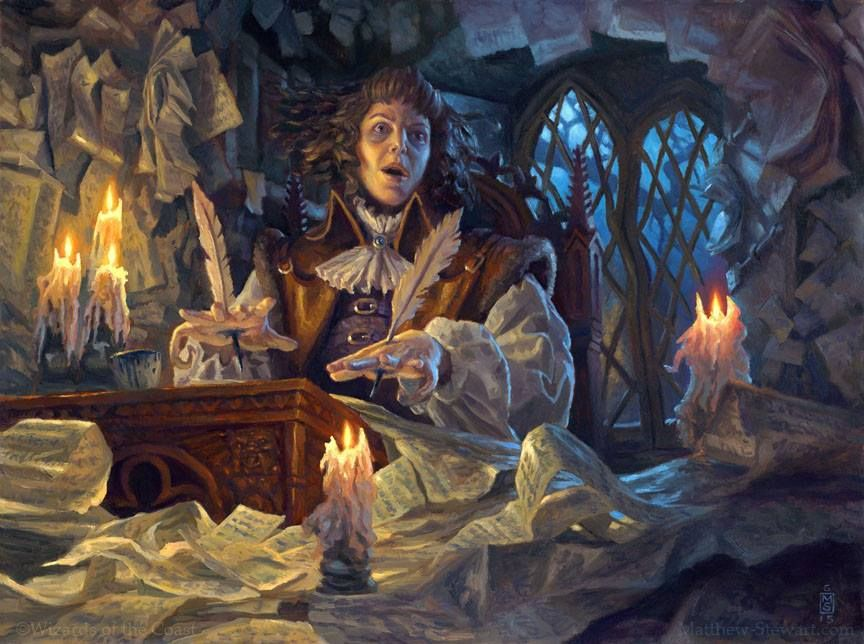

Scribe Vote - 2021
Results Are In!
The Scribe 2021 elections are finished and as expected, the 2021 Scribe will be TeaLeaf-Senpai#9519
See below for the results of the election.
The Scribe 2021 elections are finished and as expected, the 2021 Scribe will be TeaLeaf-Senpai#9519
See below for the results of the election.